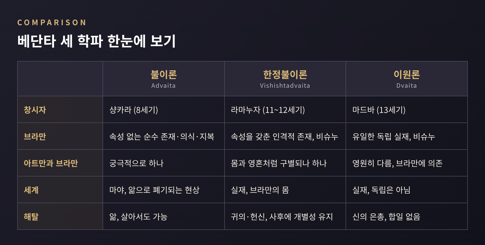
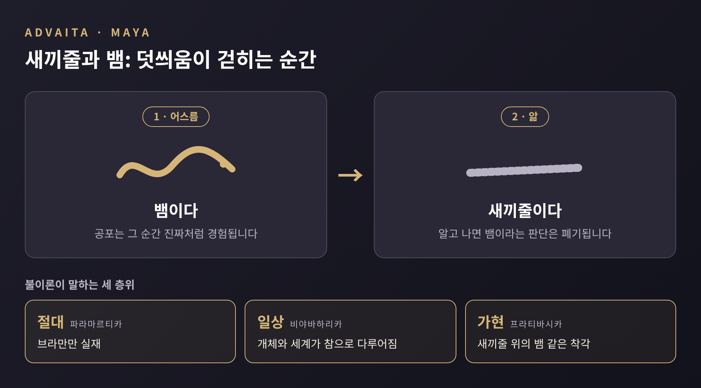
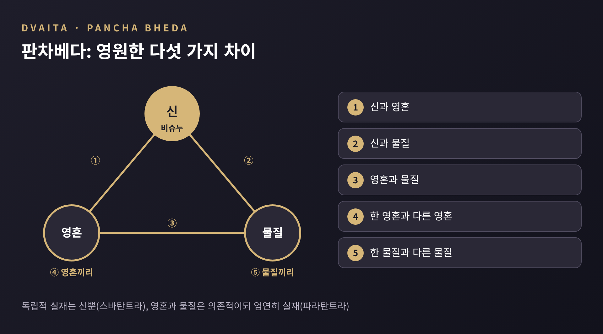

베단타 세 학파 비교, 브라만과 마야를 바라보는 세 가지 시선

이번 글에서는 인도 철학의 한 갈래인 베단타를 세 학파로 나누어 비교해 보겠습니다. 샹카라의 불이론, 라마누자의 한정불이론, 마드바의 이원론이 브라만과 아트만, 그리고 세계를 각각 어떻게 설명했는지가 중심입니다.
이 글은 어느 학파가 옳은지를 가리지 않습니다. 각 학파가 스스로 어떻게 말했고, 학계가 그것을 어떻게 서술하는지만 정리합니다.
■ 베단타란 무엇인가
베단타는 인도 철학의 여섯 체계(다르샤나) 가운데 하나입니다. 이름은 베다의 '결론'이라는 뜻입니다. 브리태니커는 베단타가 우파니샤드와, 이를 연구하며 발전한 학파를 가리킨다고 설명합니다.
베단타에는 공통으로 기대는 세 가지 기본 텍스트가 있습니다. 우파니샤드, 브라흐마 수트라, 바가바드 기타입니다. 브라흐마 수트라는 우파니샤드의 가르침을 아주 짧은 문장으로 압축한 책입니다. 문장이 짧은 만큼 해석의 여지가 넓습니다. 세 학파는 이 텍스트에 각자 주석을 달며 서로 다른 체계를 세웠습니다.
공통점도 분명합니다. 자아가 윤회한다는 것, 윤회에서 벗어나는 해탈이 바람직하다는 것, 베다가 그 길을 알려 주는 권위라는 것, 브라만이 세계의 원인이라는 것입니다. 갈라지는 지점은 하나로 모입니다.
개인의 자아(아트만)와 절대자(브라만)는 어떤 관계인가.
참고로 서양에서는 불이론이 베단타 전체로 오해되는 일이 있습니다. 불이론은 여러 학파 가운데 하나입니다.

■ 샹카라의 불이론: 둘이 아니다
샹카라는 보통 8세기 인물로 소개됩니다. 다만 연대는 확정되어 있지 않습니다. 현대 학계는 대략 8세기 전반으로 보고, 788~820년설도 오래 통용되었습니다. 전통 수도원들은 이보다 훨씬 이른 기원전 5세기를 주장하기도 합니다.
그의 핵심 주장은 간단합니다. 개인의 자아와 브라만은 궁극적으로 같다는 것입니다. 우파니샤드의 대문장 '타트 트밤 아시', 곧 '그것이 너다'가 이를 압축합니다.
불이론의 브라만은 속성이 없습니다. 순수한 존재, 순수한 의식, 순수한 지복이라고만 말할 수 있습니다. 그래서 '이것도 아니고 저것도 아니다(네티 네티)'라는 부정의 방식으로 가리킵니다. 우리가 신이라 부르며 예배하는 인격적 존재는 '속성을 가진 브라만', 곧 이슈와라로 설명됩니다.
그렇다면 눈앞의 세계는 무엇일까요. 여기서 마야가 등장합니다. 마야는 브라만이 세계로 드러나는 힘이자 방식입니다. IEP의 표현을 빌리면, 경험하는 순간에는 실재처럼 보이지만 궁극적 존재는 없는 것입니다.
대표적인 비유가 새끼줄과 뱀입니다. 어스름한 길에서 새끼줄을 뱀으로 착각하면 그 순간의 공포는 진짜입니다. 새끼줄임을 알고 나면 뱀은 사라집니다. 이를 '덧씌움(아디야사)'이라 부릅니다. 세계가 브라만 위에 덧씌워진 현상이라는 뜻입니다.

이 설명이 세계를 '없는 것'으로 치부한다고 오해하기 쉽습니다. 불이론은 층위를 나눕니다. 절대의 층위에서는 브라만만 실재합니다. 일상의 층위에서는 개체와 세계, 이슈와라가 참으로 다루어집니다. IEP는 세계가 "전적으로 실재하지도, 전적으로 비실재하지도 않다"고 정리합니다. 경험되기 때문에 무가 아니고, 브라만을 아는 순간 폐기되기 때문에 궁극적 실재도 아니라는 것입니다.
해탈은 앎으로 이루어집니다. 무지(아비디아)가 걷히고 자아가 브라만임을 알아차리는 일입니다. 불이론은 이를 살아 있는 동안에도 가능하다고 보며, 지반묵티라고 부릅니다. 샹카라는 헌신과 의례, 윤리를 마음을 준비시키는 과정으로 보았고 그것이 곧바로 해탈로 이어진다고는 보지 않았다고 서술됩니다.
학계의 이견도 있습니다. 나카무라 같은 연구자는 샹카라를 완전한 독창가라기보다 앞선 불이론 사상을 종합한 인물로 평가합니다. 샹카라가 힌두 전통의 수호자로 굳건한 위상을 얻은 것은 14세기 이후라는 서술도 있습니다. 반대편 학파에서 '위장 불교도'라고 비난한 일이 있었으나 불이론 전통은 이를 받아들이지 않습니다.
■ 라마누자의 한정불이론: 차이를 품은 하나
라마누자는 11~12세기의 인물입니다. 전통은 1017~1137년으로 전하고, 최근 연구는 1077~1157년 정도로 봅니다. 그의 대표작은 브라흐마 수트라 주석인 『스리 바샤』입니다.
한정불이론(비시슈타드바이타)은 '차별을 지닌 불이'를 뜻합니다. 실재는 하나, 곧 브라만뿐입니다. 하지만 그 브라만은 의식 있는 존재(영혼)와 의식 없는 존재(물질)라는 양태로 한정된 브라만입니다. 이는 베단타 데시카의 정식화로 전해집니다.
라마누자에게 브라만은 속성이 없는 존재가 아닙니다. 비슈누, 곧 나라야나이며 무수한 길상한 속성을 갖춘 인격적 존재입니다. 의식도 브라만의 본질이 아니라 속성으로 다룹니다. 샹카라의 브라만과 가장 크게 갈리는 대목입니다.
세계와 영혼의 관계는 몸과 영혼의 비유로 설명됩니다. 브라만이 영혼이고, 개별 영혼과 물질세계는 그 몸입니다. 몸은 영혼 없이 존재할 수 없지만, 몸과 영혼은 같은 것이 아닙니다. 그래서 일체가 하나이면서도 개체마다 구별되는 정체성이 유지됩니다.
마야에 대한 입장도 다릅니다. 라마누자는 세계를 환상이라 보지 않았습니다. 세계는 실재하고, 브라만의 몸입니다. IEP는 그의 비판을 이렇게 요약합니다. 무지는 무지할 수 있는 누군가를 전제합니다. 그런데 의식 그 자체인 브라만은 무지할 수 없습니다. 그러니 개체성이 무지보다 앞선다는 논리입니다.
해탈의 모습도 다릅니다. 해탈한 영혼은 브라만에 녹아들지 않고 개별성을 유지한 채 영적인 몸으로 신을 섬기며 지복을 누립니다. 이 학파는 사후의 해탈만 인정하고 살아 있는 동안의 해탈은 인정하지 않습니다. 길은 박티, 곧 헌신과 신에 대한 귀의입니다. 은총과 개인의 노력이 어떤 비율로 작동하는지에 대해서는 학파 내부의 북파와 남파가 서로 다른 입장을 가집니다.
■ 마드바의 이원론: 영원히 다른 것들
마드바는 13세기 인물로, 1238~1317년을 살았다고 전해집니다. 그의 학파는 스스로를 '실재론적 관점(타트바바다)'이라 부릅니다.
이원론의 핵심은 다섯 가지 차이(판차베다)입니다. 신과 영혼, 신과 물질, 영혼과 물질, 한 영혼과 다른 영혼, 한 물질과 다른 물질 사이에 영원하고 실재하는 구별이 있다는 주장입니다.

현실은 두 질서로 나뉩니다. 홀로 독립한 것(스바탄트라)은 브라만, 곧 비슈누뿐입니다. 영혼과 물질은 의존적이지만(파라탄트라) 그 자체로 엄연히 실재합니다. 마드바에게 아트만은 브라만에 불가분하게 의존하기 때문에 브라만과 본질적으로 다릅니다.
마야 비판은 논리적입니다. 감각 지각의 타당성을 부정하면 베다에 대한 앎을 포함한 모든 앎이 흔들린다고 마드바는 지적합니다. 마야가 '실재도 비실재도 아니다'라는 지위도 성립하기 어렵다고 보았습니다. 위키백과의 정리에 따르면, 무지가 브라만에 속한다면 브라만이 실재인 이상 무지도 실재가 되어 불이론의 목표가 흔들린다는 논지도 있습니다.
해탈은 비슈누의 은총에 달려 있습니다. 그래서 박티가 필수이고, 신에 대한 직접적 체험의 앎도 요구됩니다. 영혼은 신의 반영으로 설명되며, 해탈한 뒤에도 신과 같아지지 않습니다. 해탈한 영혼들 사이에도 위계가 남습니다.
영혼을 세 부류로 나누는 설명도 전해집니다. 해탈할 자격이 있는 영혼, 영원히 윤회하는 영혼, 그렇지 못한 영혼입니다. 이 대목은 소개된 자료마다 정리의 정도가 달라, 학파 내부의 신학적 설명으로 이해하시는 편이 좋겠습니다.
■ 세 시선을 나란히 놓으면
세 학파의 차이를 한 줄씩 정리하면 이렇습니다.
- 불이론: 궁극적으로 아트만과 브라만은 하나이고, 세계는 앎으로 폐기되는 현상입니다.
- 한정불이론: 하나의 브라만 안에 영혼과 세계가 몸처럼 포함되며, 모두 실재합니다.
- 이원론: 신, 영혼, 물질은 영원히 구별되고, 모두 실재합니다.
세계를 보는 눈이 갈립니다. 불이론은 세계의 지위를 낮추어 층위로 나누었고, 두 신학적 학파는 세계의 실재를 지켰습니다. 해탈을 보는 눈도 갈립니다. 합일에 가까운 앎이냐, 개별성을 유지한 신과의 관계냐, 합일이 아닌 영원한 거리냐의 차이입니다.
이 차이를 해석하는 방식도 하나가 아닙니다. 신앙의 입장에서는 각 학파가 자기 전통의 가르침을 정교하게 풀어낸 체계입니다. 철학사의 입장에서는 같은 텍스트에서 서로 다른 논리를 이끌어 낸 해석 경쟁입니다. 이 글은 둘 중 어느 쪽도 택하지 않고, 그 경쟁의 지형만 그려 보았습니다.
정리하면 이렇습니다. 같은 텍스트에서 출발한 세 갈래 해석이, 같은 질문에 서로 다른 답을 내놓았습니다.
"나는 누구이며, 절대자와 어떤 관계인가."
샹카라는 '둘이 아니다'라고 답했고, 라마누자는 '하나이되 구별된다'고 답했으며, 마드바는 '영원히 다르다'고 답했습니다. 어느 답에 마음이 기우는지는 독자의 몫입니다. 다만 세 답을 나란히 놓고 읽는 일만으로도, 인도 사상이 한 가지 목소리가 아니었다는 사실을 선명하게 만날 수 있습니다.